Purpose
Compile weather records near the Rocky Mountain Biological Laboratory in Gothic, CO and analyze long-term trends in precipitation and temperature.
library(tidyverse)
library(lubridate)
library(viridis)
library(RColorBrewer)
library(GGally)
library(knitr)
library(kableExtra)
knitr::opts_chunk$set(comment="", cache=T, warning = F, message = F, fig.path = "images_weather/")
maxfield_coords <- data.frame(id = "maxfield", name="MaxfieldMdw", latitude = 38.9495, longitude = -106.9908)Datasets
WRCC
Weather data from 7 RMBL stations
- Provided by the Western Regional Climate Center, the Desert Research Institute, and the Rocky Mountain Biological Laboratory
- Raw data in metric units (cleaned “FPA” data unavailable) - lots of cleanup needed, no interspersed missing values
- Downloaded as xls that is actually a tsv, and added quotes around each text cell, and gzipped
- Columns renamed according to /data/WRCC/weather_wrcc_metadata.csv
- Flags on each column indicate 0 = raw data, (M)issing data, (E)stimated data, (N)on-measuring time interval
- Data for billy’s station runs 2009 - present (valid precip data starts in 2015), other stations run 2009 - 2016 and lack precip but have soil moisture
- Data are provided at 10-min intervals, so took the mean (or sum for precip) to aggregate hourly and then daily results
- Then removed some precipitation entries much greater than 50 mm/day that were interspersed with valid data
wrcc_metadata_noflags <- read_tsv("data/WRCC/weather_wrcc_metadata.tsv") %>% mutate(index = row_number(), flag=F)
wrcc_metadata <- bind_rows(wrcc_metadata_noflags, wrcc_metadata_noflags %>% select(name_metric, col_type, index) %>%
filter(! name_metric %in% c("date","time")) %>%
mutate(name_metric=paste0("flag_",name_metric), col_type="f",flag=T)) %>% arrange(index) %>% fill(id)
#the chunk below loads the WRCC data but is slow
load("data/WRCC/daily_WRCC.rda")get_WRCC_id <- function(filename) toupper(str_match(filename, "wrcc_([a-z]+)")[,2])
tenmin_WRCC <- list.files("data/WRCC/", ".tsv.gz", full.names=T) %>% set_names(get_WRCC_id(.)) %>%
map_dfr( ~ read_tsv(.x, skip = 4, na=c("","M"), col_types=paste0(filter(wrcc_metadata, id==get_WRCC_id(.x))$col_type, collapse=""),
col_names=filter(wrcc_metadata, id==get_WRCC_id(.x))$name_metric), .id="id")
#TODO this comment says to "take the mean of the precip rate per hour that is reported every 10 min", but the code sums it and that matches well on the monthly scale with other stations
hourly_WRCC <- tenmin_WRCC %>% mutate(hour=hour(time)) %>% group_by(id, date, hour) %>%
summarize(precip_mm = sum(precip_mm), across(where(is.numeric), mean))
daily_WRCC <- hourly_WRCC %>% group_by(id, date) %>%
summarize(precip_mm = sum(precip_mm), #sum the hourly precip rates over each 24 hrs
max_av_temp_air_C = max(av_temp_air_C), min_av_temp_air_C = min(av_temp_air_C), across(where(is.numeric), mean)) %>%
mutate(year=factor(year(date)), julian=yday(date),
precip_mm = ifelse(precip_mm>50 | precip_mm < 0, NA, precip_mm)) #cut nonsense precip values >50mm/day or < 0
save(daily_WRCC, file="data/WRCC/daily_WRCC.rda")
#for CORBIL filter(date >= as.Date("2015-07-01"))#when precip starts to have reasonable values, temp starts 2015-10-01.
#no missing precip values in CORBIL - may not have been quality checked.ESS-DIVE
Weather data from the Gold Link station in Mt. Crested Butte
- Data are QAQC’d, gap-filled, and summarized daily.
- “This dataset is a gap-filled meteorological dataset (years 2011-2020) that includes modeled potential evapotranspiration from a station near the pumphouse on the East River (KCOMTCRE2 WeatherUnderground) near the top of the ridge at the Pumphouse PLM wells. These datasets are useful as model inputs. The KOMTCRE2 station is located on Mt. Crested Butte in Colorado. The purpose of this dataset is to use as input to hydrological and flow-reactive transport models as meteorological forcing. One attached file includes metadata files with definitions for all variables and units. Subsequent files include the same time series dataset, but aggregated and gap-filled at different time-stamp intervals. These include 5 minute time-series, 15 minute time-series, 30 minute time-series, 1 hour time-series, daily time-series, and hourly and daily modeled evapotranspiration.”
- Michelle Newcomer and David Brian Rogers. 2020. Gap-filled meteorological data (2011-2020) and modeled potential evapotranspiration data from the KCOMTCRE2 WeatherUnderground weather station, from the East River Watershed, Colorado. ESS-DIVE: Deep Insight for Earth Science Data. doi:10.15485/1734790, version: ess-dive-ce2fd798f9d81f5-20201210T030125380.
daily_KCOMTCRE2 <- read_csv("data/Wunderground/2011_2020_KComCret_1day_ETModeled.csv")EPA CASTNET
Weather data from the RMBL Research Meadow
- EPA CASTNET program, station ID GTH161
- Also collects air quality data - ozone and air filters - not yet included here
- Starts in 1989 but precipitation data is missing after 2011-12-31 (not sure why, suspiciously at the end of the year), though temperature and air quality records continue to present
- Provided hourly, so summarized daily, either propagating missing values or ignoring them (see code)
- The plot and table show the number of missing hourly values per day
hourly_GTH161 <- read_csv("data/EPA_CASTNET/CASTNET_GTH161_Meteorological_Hourly.csv.gz",
col_types=cols(DATE_TIME=col_datetime("%m/%d/%Y %H:%M:%S"), QA_CODE=col_character()))
# daily_GTH161 is used for daily_all, but
# this keeps precip sums when there is missing hourly values
# an entire day missing gets precip = 0 and temperature = NaN
daily_GTH161 <- hourly_GTH161 %>% mutate(date = date(DATE_TIME)) %>% filter(year(date) < 2012) %>% group_by(date) %>%
summarize(TEMPERATURE=mean(TEMPERATURE, na.rm=T), PRECIPITATION = sum(PRECIPITATION, na.rm=T))
# daily_GTH161_NA propagates any missing hourly values up to the day.
# Could be customized to accept a few missing hours
acceptable_NAs <- 0
daily_GTH161_NA <- hourly_GTH161 %>% arrange(DATE_TIME) %>% mutate(date = date(DATE_TIME)) %>% group_by(date) %>%
summarize(tavg_C=mean(TEMPERATURE), tmax_C=max(TEMPERATURE), tmin_C=min(TEMPERATURE),
prcp_mm = ifelse(sum(is.na(PRECIPITATION)) <= acceptable_NAs, sum(PRECIPITATION, na.rm=T), NA))
hourly_GTH161_missing <- hourly_GTH161 %>% group_by(date=date(DATE_TIME)) %>%
filter(date < ymd("2012-01-01")) %>% summarize(missing_precip_hrs = sum(is.na(PRECIPITATION)))
ggplot(hourly_GTH161_missing, aes(x=date, y=missing_precip_hrs)) + geom_point()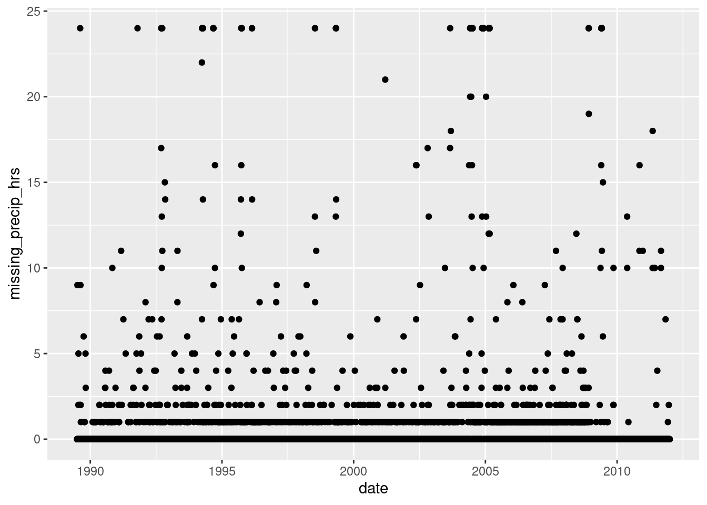
table(hourly_GTH161_missing$missing_precip_hrs) %>% as.data.frame %>% rename(missing_hours=Var1, num_days=Freq) %>% kable| missing_hours | num_days |
|---|---|
| 0 | 7288 |
| 1 | 511 |
| 2 | 126 |
| 3 | 36 |
| 4 | 32 |
| 5 | 20 |
| 6 | 15 |
| 7 | 19 |
| 8 | 7 |
| 9 | 8 |
| 10 | 14 |
| 11 | 9 |
| 12 | 4 |
| 13 | 8 |
| 14 | 5 |
| 15 | 2 |
| 16 | 8 |
| 17 | 3 |
| 18 | 2 |
| 19 | 1 |
| 20 | 3 |
| 21 | 1 |
| 22 | 1 |
| 24 | 96 |
NOAA
Weather data from 7 stations near RMBL sourced from NOAA’s GHCN Daily dataset.
- All stations within 10 km of MAxfield Meadow near Gothic
- Daily summaries quality checked by GHCN
- Includes Crested Butte (1909-present), Schofield Pass (1985-present), Butte (1980-present)
- Stations beginning with US1COGN (Colorado-Gunnison County) are community CoCoRaHS stations, including billy barr’s station in Gothic. Unlike all the other datasets, the reported precipitation is from 7 am the previous day to 7 am that day. To handle this discrepancy coarsely, the date is set to the day before.
library(rnoaa)
station_data <- ghcnd_stations()# long download unless cached
NOAA_stations <- meteo_nearby_stations(lat_lon_df = maxfield_coords, station_data = station_data,
radius = 10, var = c("PRCP", "TAVG"))$maxfield %>% #stations within 10 km radius of Maxfield Meadow
left_join(station_data %>% filter(element=="PRCP"))
remove(station_data)
NOAA_stations_name <- with(NOAA_stations, set_names(name, id))
daily_NOAA <- meteo_pull_monitors(NOAA_stations$id, keep_flags = T) %>%
mutate(across(contains("flag"), as.factor)) %>% #All units are in tenths of mm, converted to mm here.
mutate(across(c("prcp","snow","snwd","wesd","wesf"), ~ as.integer(.x)/10, .names="{.col}_mm"), .keep="unused") %>%
mutate(across(c("tmin","tavg","tmax"), ~ as.integer(.x)/10, .names="{.col}_C"), .keep="unused") %>%
mutate(date = case_when(str_sub(id) == "US1" ~ date - days(1), TRUE ~ date)) # CoCoRaHS stations are recorded the next day at 7 amNCEI
Weather data from the Global Surface Summary of the Day (GSOD)
- From NOAA’s National Centers for Environmental Information (NCEI)
- Not currently imported - only get Gunnison/Crested Butte and Aspen airports
- List of stations
library(GSODR)
gsodr.inventory <- get_inventory() %>% #long download
filter(STNID %in% nearest_stations(38.9495, -106.9908,50))gothicwx
billy barr’s snow records in Gothic, CO
groundcover <- read_tsv("./data/gothicwx/groundcover.tsv") %>%
mutate(across(starts_with("first"), list(day=yday)), year=year(first_0_cm))
first_snow_2020 <- as.POSIXct(c("2020-10-25", "2020-12-31"), tz="UTC") #TODO check this first permanent snow of 2020 (not yet on billy's website)Combine datasets
Combine selected daily weather station data in long or wide format.
#Combine all the weather stations daily precip and temperature statistics in long format
daily_long <- bind_rows(
GTH161 = daily_GTH161_NA %>% select(date, tavg_C, tmax_C, tmin_C, prcp_mm),
KCOMTCRE2 = daily_KCOMTCRE2 %>% select(date, tavg_C = Tmean, tmax_C = Tmax, tmin_C = Tmin, prcp_mm = Precip),
.id="id") %>%
bind_rows(daily_WRCC %>% select(id, date,
tavg_C = av_temp_air_C, tmax_C = max_av_temp_air_C, tmin_C = min_av_temp_air_C,
prcp_mm = precip_mm)) %>%
bind_rows(daily_NOAA %>% select(id, date, tavg_C, tmax_C, tmin_C, prcp_mm)) %>% mutate(id=factor(id))
#Combine a few of the closer weather station precipitation datasets and snowmelt in wide format
daily_all <- daily_NOAA %>% filter(id == "US1COGN0018") %>%
full_join(daily_GTH161) %>% full_join(daily_KCOMTCRE2) %>%
full_join(daily_WRCC %>% filter(id=="CORBIL"), by="date") %>%
rename(EPA_RsrchMdw=PRECIPITATION, ESSDIVE_GoldLink=Precip, WRCC_billy=precip_mm, NOAA_billy=prcp_mm) %>%
mutate(yr = year(date), mo = month(date, label=F),
ground_covered = factor(c("smmr","wntr"))[1+date %in% do.call(c, map2(c(groundcover$first_snow, first_snow_2020[1]), c(groundcover$first_0_cm, first_snow_2020[2]), ~ seq(date(.x), date(.y), by="day")))]) Fill in EPA CASTNET data since 2011 with NOAA precip from billy’s NOAA station in Gothic.
- TODO: Need to redo this with the EPA data summed from 7 am to 7 am.
- Uses a simple linear model for their period of overlap, forced through zero
- Fit separately for summer vs. winter (determined by billy’s groundcover data)
- See the regressions under daily precip 1989-present
#correlate daily EPA_RsrchMdw and NOAA_billy to predict what EPA would look like for 2012-2020
EPA_NOAA_daily_model <- lm(EPA_RsrchMdw ~ NOAA_billy:ground_covered+0, data=daily_all)
#EPA_NOAA_monthly_model <-lm(EPA_RsrchMdw ~ NOAA_billy*season, data=monthly_all %>%
#mutate(season=factor(c("wntr","smmr"))[1+mo %in% 6:9]))
daily_all <- daily_all %>%
mutate(EPA_predicted = is.na(EPA_RsrchMdw) & !is.na(NOAA_billy),
EPA_NOAA_filled = ifelse(is.na(EPA_RsrchMdw), predict(EPA_NOAA_daily_model, newdata=daily_all), EPA_RsrchMdw))
stations <- c("EPA_NOAA_filled", "EPA_RsrchMdw","ESSDIVE_GoldLink","WRCC_billy","NOAA_billy")
monthly_all <- daily_all %>% group_by(yr, mo) %>%
summarize(across(all_of(stations), ~ ifelse(sum(is.na(.x))>5, NA, sum(.x, na.rm=T))), .groups="drop") %>% arrange(yr, mo)
save(daily_all, file="data/daily_all.rda")Stations
Metadata
List the weather station metadata
- Links point to the data sources
- Distance is from Maxfield Meadow
- Years show the range of the precipitation record (NA if no precipitation data)
all_stations <- bind_rows(
NOAA_stations %>% mutate(source="NOAA", url=paste0("https://www.ncdc.noaa.gov/cdo-web/datasets/GHCND/stations/GHCND:",id,"/detail")),
read_tsv("data/stations.tsv") %>%
rnoaa::meteo_process_geographic_data(lat = maxfield_coords$latitude, long = maxfield_coords$long) %>%
mutate(element="PRCP")) %>%
mutate(source_name = paste(source, name, sep="_"),
short_name = str_replace(name, "CRESTED BUTTE","CB"),
color = c(brewer.pal(9, "Set1"), brewer.pal(6, "Dark2"))) %>%
rows_patch(daily_long %>% drop_na(prcp_mm) %>% group_by(id) %>% summarize(first_year=min(year(date)), last_year=max(year(date))))
stations_pal <- with(all_stations, set_names(color, short_name))
stations_name <- with(all_stations, set_names(short_name, id))
stations_source_name <- with(all_stations, set_names(source_name, id))
all_stations %>% mutate(id = cell_spec(id, "html", link = url), .keep="unused") %>%
select(-c(state, gsn_flag, wmo_id, source_name, short_name, color)) %>% relocate(source) %>%
kable("html", escape = FALSE) %>%
kable_styling(bootstrap_options = c("hover", "condensed")) | source | id | name | latitude | longitude | distance | elevation | element | first_year | last_year |
|---|---|---|---|---|---|---|---|---|---|
| NOAA | US1COGN0018 | CRESTED BUTTE 6.2 N | 38.96030 | -106.9908 | 1.2009052 | 2927.9 | PRCP | 2004 | 2021 |
| NOAA | US1COGN0030 | MOUNT CRESTED BUTTE 0.3 ENE | 38.91030 | -106.9623 | 5.0076927 | 2941.0 | PRCP | 2008 | 2010 |
| NOAA | US1COGN0066 | CRESTED BUTTE 1.9 NNE | 38.89470 | -106.9685 | 6.3915733 | 2822.4 | PRCP | 2017 | 2021 |
| NOAA | USS0006L11S | Butte | 38.89000 | -106.9500 | 7.4987757 | 3096.8 | PRCP | 1980 | 2021 |
| NOAA | USC00051959 | CRESTED BUTTE | 38.87390 | -106.9772 | 8.4882935 | 2702.7 | PRCP | 1909 | 2020 |
| NOAA | US1COGN0020 | CRESTED BUTTE 0.5 ENE | 38.87220 | -106.9780 | 8.6664240 | 2706.0 | PRCP | 2004 | 2011 |
| NOAA | USS0007K11S | Schofield Pass | 39.02000 | -107.0500 | 9.3614039 | 3261.4 | PRCP | 1985 | 2020 |
| EPA | GTH161 | RsrchMdw | 38.95627 | -106.9859 | 0.8651189 | 2915.0 | PRCP | 1989 | 2011 |
| WRCC | CORBIL | billy | 38.96300 | -106.9930 | 1.5131369 | 2917.0 | PRCP | 2015 | 2021 |
| WRCC | CORJUD | JuddFalls | 38.96400 | -106.9840 | 1.7161922 | 3004.0 | PRCP | NA | NA |
| WRCC | CORKET | KettlePonds | 38.94200 | -106.9730 | 1.7507490 | 2860.0 | PRCP | 2015 | 2016 |
| WRCC | CORSNO | Snodgrass | 38.93300 | -106.9860 | 1.8810956 | 3396.0 | PRCP | NA | NA |
| ESSDIVE | KCOMTCRE2 | GoldLink | 38.91500 | -106.9590 | 4.7204356 | 2926.0 | PRCP | 2011 | 2020 |
| WRCC | CORMEX | MexicanCut | 39.02800 | -107.0640 | 10.7804142 | 3412.0 | PRCP | NA | NA |
| WRCC | CORALM | Almont | 38.65500 | -106.8620 | 34.5967136 | 2469.0 | PRCP | NA | NA |
Map
Map of stations, excluding Almont
library(OpenStreetMap)
map <- openmap(c(39.05, -107.1), c(38.85, -106.9), type = "stamen-terrain")
map.latlon <- openproj(map, projection = "+proj=longlat +ellps=WGS84 +datum=WGS84 +no_defs")
autoplot(map.latlon) +
geom_point(data=filter(all_stations, id != "CORALM"),
aes(x=longitude, y=latitude, color=short_name), size=2) +
theme(legend.position="bottom", axis.title=element_blank()) + labs(color="Station") +
scale_color_manual(values=stations_pal)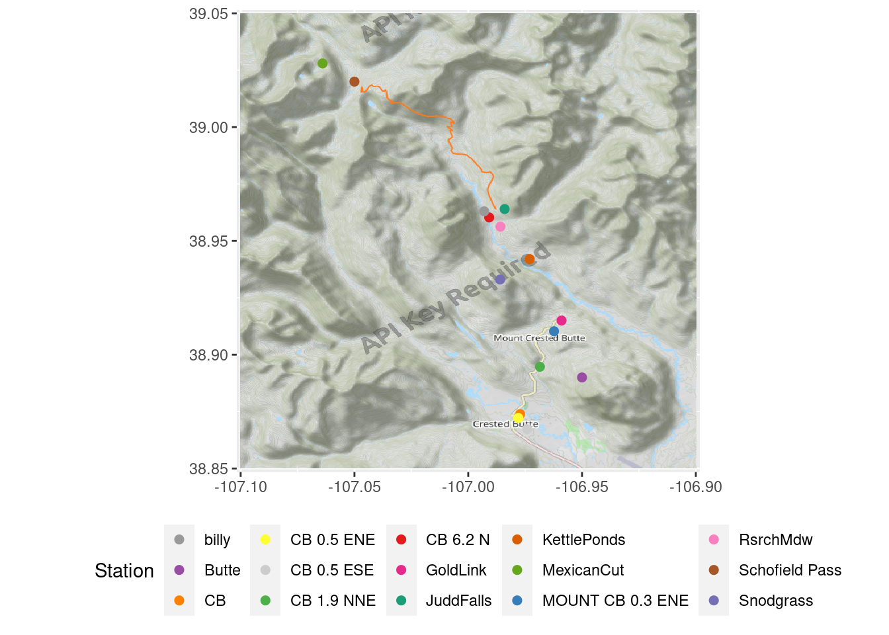
Data coverage
The range that each station was active collecting precipitation or temperature data. Note that data have not been cleaned at all yet, so there are unrealistic extreme values.
ggplot(daily_long, aes(x=date, y=id, color=prcp_mm)) + geom_tile() +
scale_y_discrete(labels=stations_source_name) +
labs(y="Station",x="Year", color="Daily precipitation (mm)") +
theme_minimal() + theme(legend.position = "top")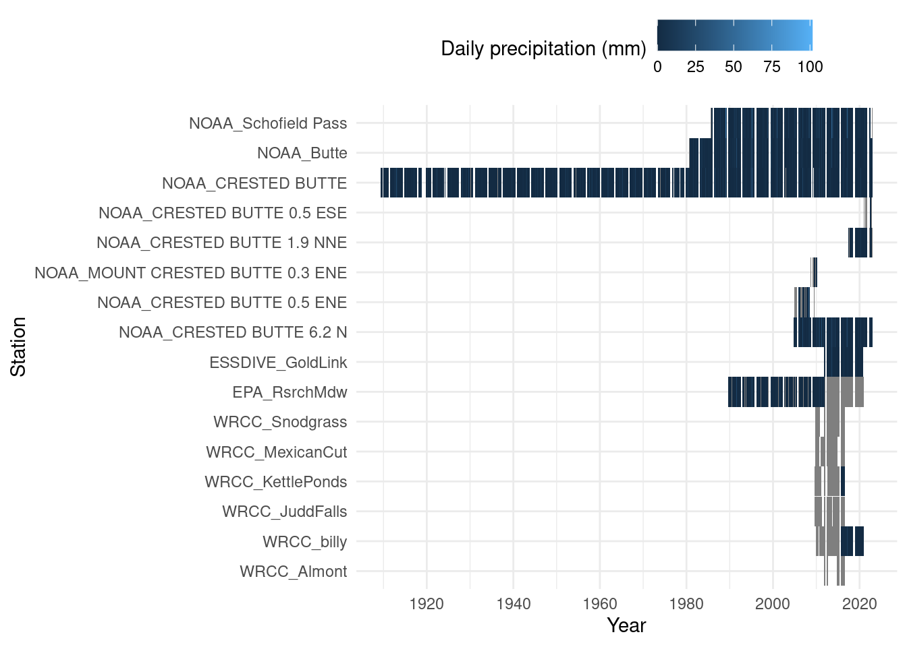
ggplot(daily_long, aes(x=date, y=id, color=tmax_C)) + geom_tile() +
scale_y_discrete(labels=stations_source_name) + scale_color_viridis_c(option="inferno") +
labs(y="Station",x="Year", color="Maximum temperature (C)") +
theme_minimal() + theme(legend.position = "top")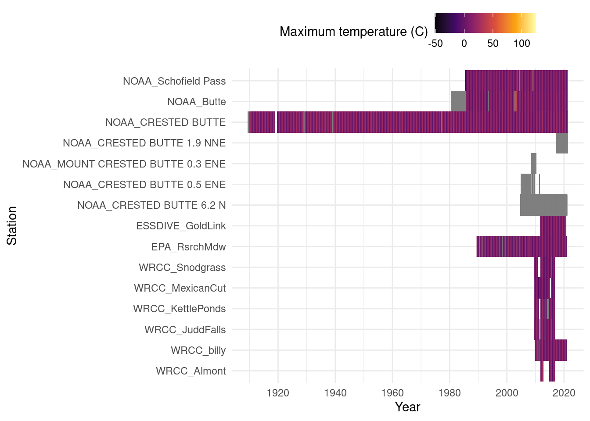
Daily precip 1989-present
Compare precipitation data from the following sources:
- EPA Research Meadow (1989-2011)
- billy’s NOAA station in Gothic, CRESTED BUTTE 6.2 N, enrolled in CoCoRaHS (2004-present)
- The EPA Research Meadow data extended with billy’s NOAA station (EPA/NOAA, 1989-present)
- billy’s data on WRCC (2015-present), does not match his NOAA data (likely because of different summation windows)
- Mt. Crested Butte Gold Link station cleaned by ESSDIVE (2011-2020)
The correlation plots show how precipitation measurements are correlated on the daily scale. Since the NOAA_billy data from CoCoRaHS is shifted back a day (collected at 7 am the next day), it doesn’t match up with the WRCC_billy data (or correlate well with the other stations), which are summed from midnight to midnight. Taking the monthly sum makes them almost match.
ggplot(daily_all %>% filter(year(date) %in% 2018:2020), aes(y=EPA_NOAA_filled, x=yday(date))) + geom_col(aes(fill=ground_covered)) +
facet_wrap(vars(year(date)), ncol=1) + labs(x="Day of year", y="EPA/NOAA precipiation (mm)", fill="Snow cover")
daily_all %>% pivot_longer(unname(stations), names_to="station", values_to="precipitation_mm") %>%
filter(yday(date) >100, yday(date) < 240, yr %in% 2018:2020) %>%
ggplot(aes(x=yday(date), y=precipitation_mm, color=station, shape=ground_covered)) +
geom_point() + facet_wrap(vars(yr), ncol=1) + theme(legend.position = "top", legend.direction="vertical") +
labs(x="Day of year", y = "Precipitation (mm)", color="Station", shape="Snow cover")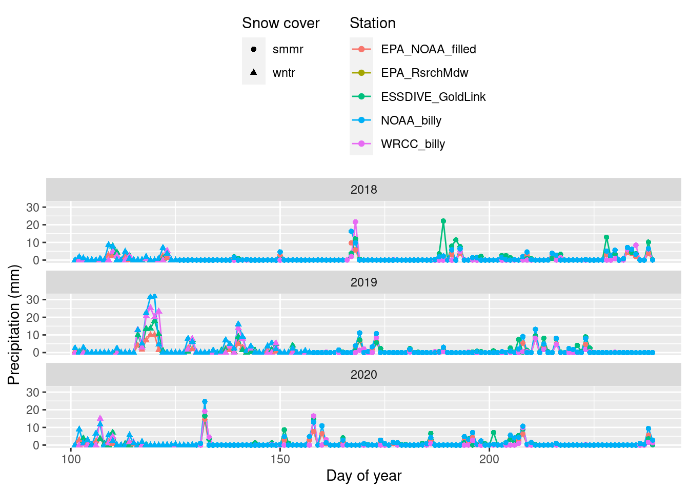
precip_max <- 50
lower_continuous <- function (data, mapping, ...) {
ggally_smooth(data = data, mapping = mapping, ..., method = "loess") + scale_shape_manual(values=c(1,2))+
coord_cartesian(xlim=c(0,precip_max), ylim=c(0,precip_max)) + geom_abline(slope=1, intercept=0)+
scale_x_continuous(breaks=seq(0,precip_max, by=precip_max/5))+scale_y_continuous(breaks=seq(0,precip_max, by=precip_max/5))
}
lower_combo <- function (data, mapping, ...) {
ggally_facethist(data = data, mapping = mapping, binwidth=precip_max/50,...) +
coord_cartesian(xlim=c(0,precip_max)) + scale_x_continuous(breaks=seq(0,precip_max, by=precip_max/5))
}
ggpairs(daily_all %>% select(all_of(unname(stations[-1])), ground_covered), mapping=aes(color=ground_covered,shape=ground_covered), lower=list(continuous=wrap(lower_continuous), combo=wrap(lower_combo)))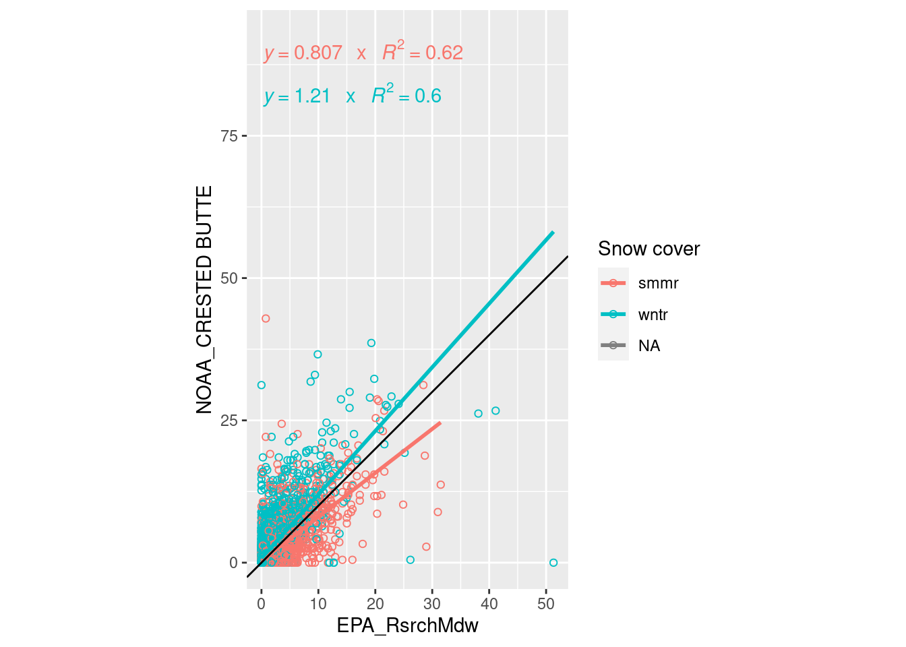
filter(daily_all) %>% ggplot(aes(y=EPA_RsrchMdw,x= NOAA_billy, color=ground_covered)) + geom_point(shape=1) + geom_smooth(method="lm", se=F) + geom_abline(intercept=0, slope=1) + labs(color="Snow cover")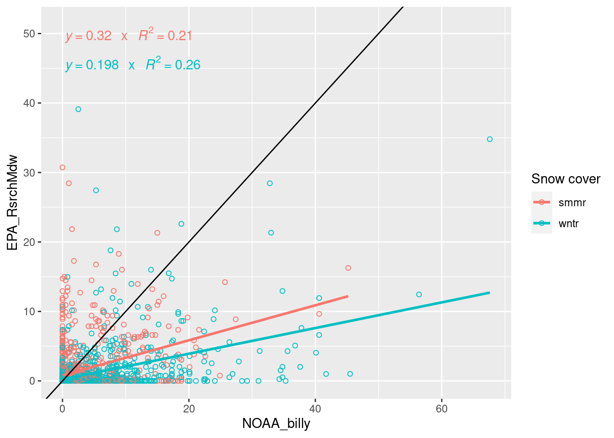
Monthly precip 1989-present
#recalculate Campbell and Wendlandt 2013 July average, 1989 - 2006 EPA station
(EPA_89_06_July_avg_mm <- monthly_all %>% filter(mo==7, yr >= 1989, yr <= 2006) %>% pull(EPA_NOAA_filled) %>% mean)[1] 53.70822(water_addition_per_month_mm <- (14 / 4 / 2) * 31) #14 L applied to 4 m2 every 2 days = 1.75 mm daily precip * 31 days in July[1] 54.25monthly_all %>% pivot_longer(unname(stations), names_to="station", values_to="precipitation_mm") %>%
ggplot(aes(x=mo*30.4-15.2, y=precipitation_mm, color=station)) + facet_wrap(vars(yr)) + #place points at month midpoint
#geom_rect(data=waterdates %>% pivot_wider(names_from=precip_treatments, values_from=c(day, date)) %>% mutate(yr=factor(year)),
# aes(xmin=day_started, xmax=day_ended, ymin=0, ymax=water_addition_per_month_mm), inherit.aes=F,
# fill=water_pal["Addition"])+
geom_line() + geom_point()+
geom_point(data=groundcover %>% filter(year>=2004) %>% mutate(yr=factor(year)), aes(x=first_0_cm_day,y=0), inherit.aes=F)+
geom_point(data=groundcover %>% filter(year>=2005) %>% mutate(yr=factor(year-1)), aes(x=first_snow_day,y=0), inherit.aes=F)+
labs(y="Monthly precipitation (mm)", x="Day of the year, with snowmelt and first snow dates", color="Station") +
theme(legend.position="top") + coord_cartesian(ylim=c(0,200))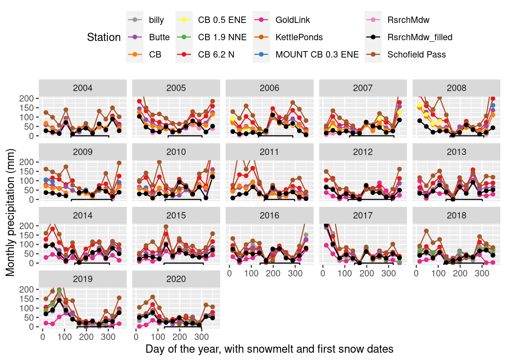
precip_max <- 250
ggpairs(monthly_all %>% mutate(season=factor(c("wntr","smmr"))[1+mo %in% 6:9]) %>% select(all_of(unname(stations[-1])), season), mapping=aes(color=season,shape=season), lower=list(continuous=wrap(lower_continuous), combo=wrap(lower_combo)))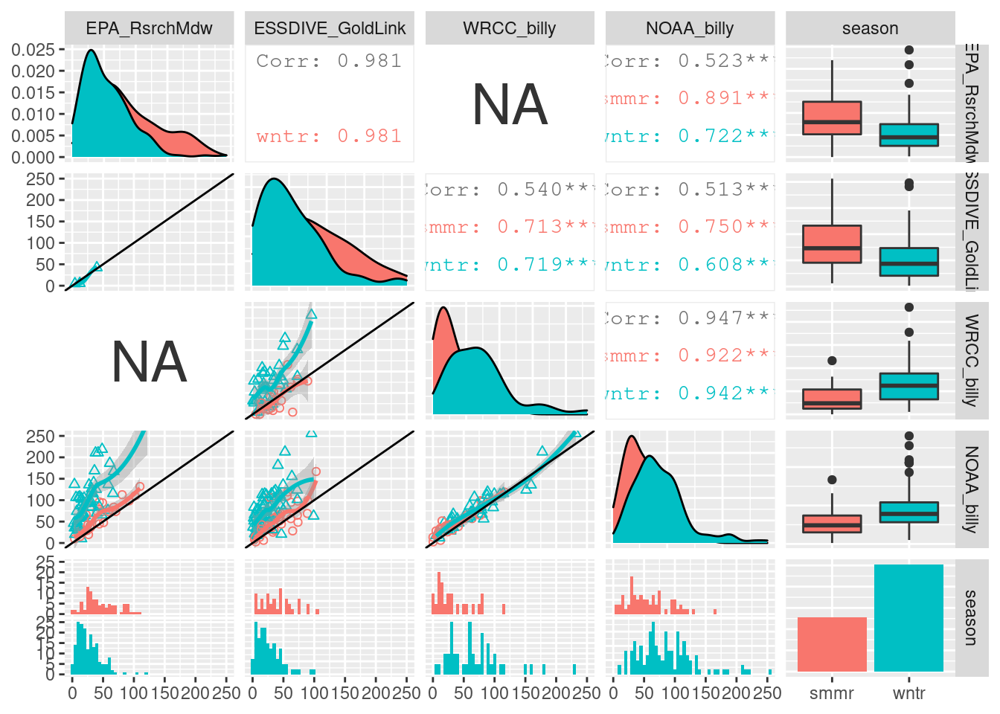
filter(monthly_all) %>% ggplot(aes(y=EPA_RsrchMdw,x= NOAA_billy, color=ifelse(mo %in% 6:9,mo,"Oct - May"))) + geom_point() + geom_smooth(method="lm", se=F) + geom_abline(intercept=0, slope=1) + labs(color="Month")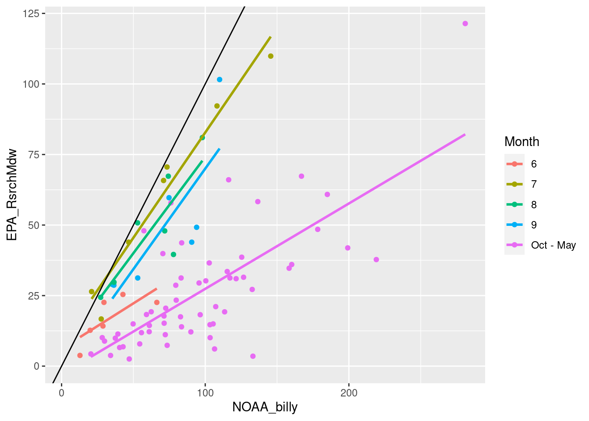
monthly_all %>% filter(mo %in% 5:9) %>%
ggplot(aes(x=mo, y=EPA_NOAA_filled)) + geom_smooth(span=0.5, color="black") +
geom_line(aes(color=ifelse(yr>=2018, "study period (filled)", ifelse(yr>=2012,"filled from billy's NOAA data","original EPA data")), group=yr)) +
geom_point(x=7, y=EPA_89_06_July_avg_mm)+ scale_y_continuous(limits=c(0,100))+
geom_text(aes(label=ifelse(yr>=2018, yr, ""))) +
labs(y="Monthly precipitation (mm)", x="Month", title="EPA/NOAA summer precipitation",
subtitle="Black dot is mean July precipitation 1989-2006", color="Data filling") + theme(legend.position = "top")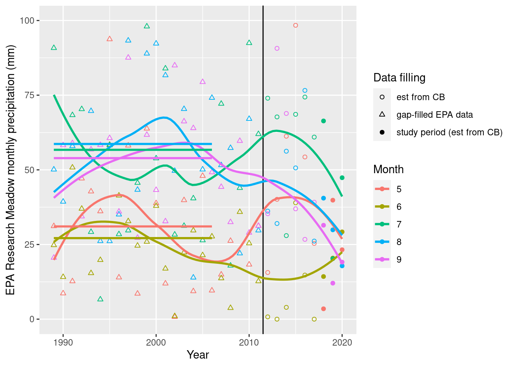
monthly_all %>% filter(mo %in% 5:9) %>% ggplot(aes(x=yr, color=factor(mo), group=mo, shape=ifelse(yr>=2018, "study period (filled)", ifelse(yr>=2012,"filled from billy's NOAA data","original EPA data")), y=EPA_NOAA_filled)) +
geom_vline(xintercept=2011.5) +geom_point() + geom_smooth(se=F, span=0.7) +
scale_shape_manual(values=c(1,2,19)) + scale_y_continuous(limits=c(0,100))+
labs(x="Year",y="EPA Research Meadow monthly precipitation (mm)", color="Month", shape="Data filling") +
geom_segment(data=monthly_all %>% filter(mo %in% 5:9, yr <= 2007) %>%
group_by(mo) %>% summarize(mean_precip=mean(EPA_NOAA_filled)),
aes(x=1989, xend=2006, y=mean_precip, yend=mean_precip, color=factor(mo)), inherit.aes=F, size=1) 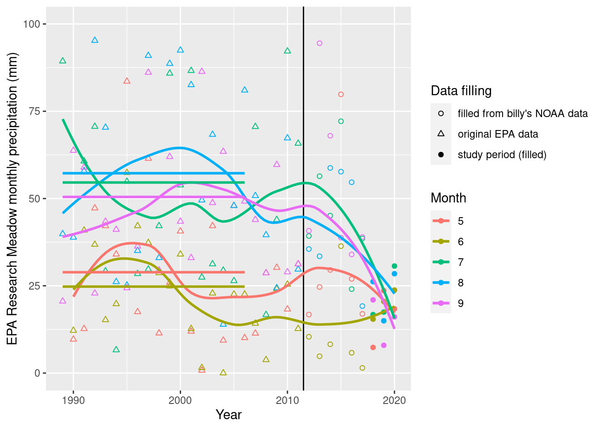
Summer precip trends 1989-present
Combined EPA Research Meadow / NOAA billy dataset from summers 1990-2020
daily_all %>% filter(year(date)>1989, year(date)<2021) %>%
mutate(julian = yday(date), decade = factor(floor(year(date)/10)*10), decade = recode(decade, "2020"="2010")) %>%
group_by(julian, decade) %>%
summarize(EPA_NOAA_filled = mean(EPA_NOAA_filled, na.rm=T), ground_covered=mean(as.integer(ground_covered), na.rm=T)-1) %>%
ggplot(aes(y=EPA_NOAA_filled, x=julian, color=decade)) +
geom_smooth(span=0.15, se=F)+ geom_point(shape=1, alpha=0.5) + geom_line(aes(y=ground_covered*2), size=0.75) +
labs(x="Day of year", y="Mean EPA/NOAA precipiation (mm)", color="Decade", title="Snowmelt and monsoon timing by decade") +
scale_color_brewer(palette = "Set1", direction = -1) + theme_minimal()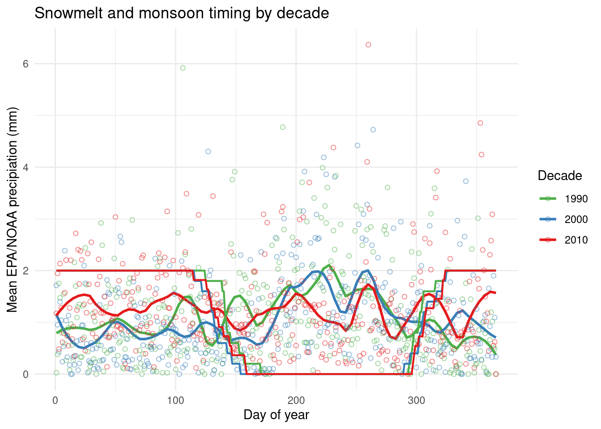
daily_all %>% filter(year(date)>1989, year(date)<2021, ground_covered=="smmr", EPA_NOAA_filled > 0) %>%
mutate(decade = factor(floor(year(date)/10)*10), decade = recode(decade, "2020"="2010")) %>% group_by(decade) %>%
ggplot(aes(x=EPA_NOAA_filled, color=decade)) + geom_density() +
labs(x="EPA/NOAA precipiation (mm)", y="Proportion", color="Decade", title="Intensity spectrum of summer rainstorms > 0 mm") +
scale_color_brewer(palette = "Set1", direction = -1) +
scale_x_continuous(breaks=scales::breaks_extended(10)) + theme_minimal()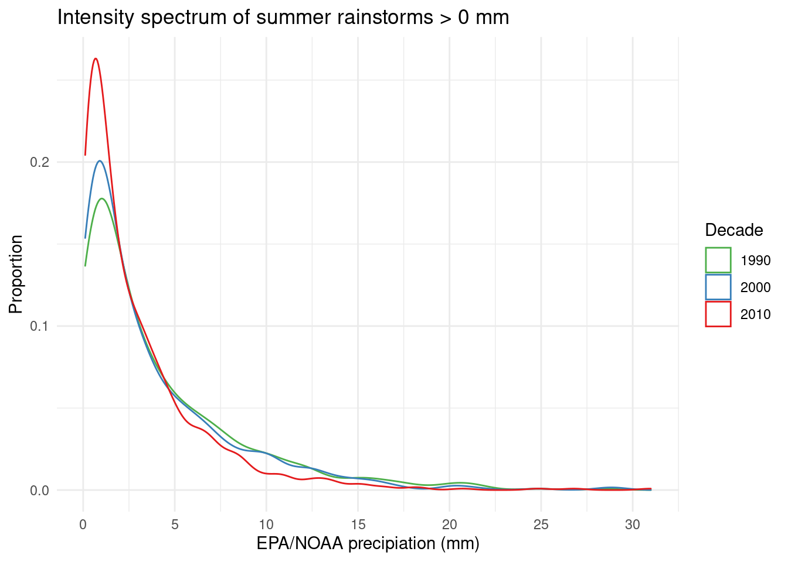
summary_EPA_NOAA <- daily_all %>% filter(year(date)>1989, year(date)<2021, EPA_NOAA_filled > 2) %>%
mutate(drought_days = c(0,diff(date)), year=year(date)) %>% filter(ground_covered=="smmr") %>%
select(year, date, drought_days) %>% group_by(year) %>% summarize(max_drought_days_2mm = max(drought_days)) %>%
left_join(daily_all %>% filter(year(date)>1989, year(date)<2021, ground_covered=="smmr") %>% group_by(year=year(date)) %>%
summarize(rain_days_2mm = sum(EPA_NOAA_filled > 2, na.rm=T),
max_precip_mm = max(EPA_NOAA_filled, na.rm=T),
total_precip_mm = sum(EPA_NOAA_filled, na.rm=T)))
summary_names <- c(max_drought_days_2mm="Longest drought (< 2 mm precipitation)",
rain_days_2mm = "Rain days (> 2 mm precipitation)",
max_precip_mm = "Maximum daily precipitation (mm)",
total_precip_mm = "Total precipitation (mm)")
ggplot(summary_EPA_NOAA %>% pivot_longer(!year), aes(y=value, x=year))+
facet_wrap(vars(name), scales="free_y", labeller=as_labeller(summary_names)) +
geom_smooth(method="lm", color="black", se=F) + geom_point() + labs(x="Year", y="") +
theme_bw() +theme(text=element_text(color="black", size=14), axis.text = element_text(color="black"),
axis.title.y= element_blank(), strip.background = element_blank())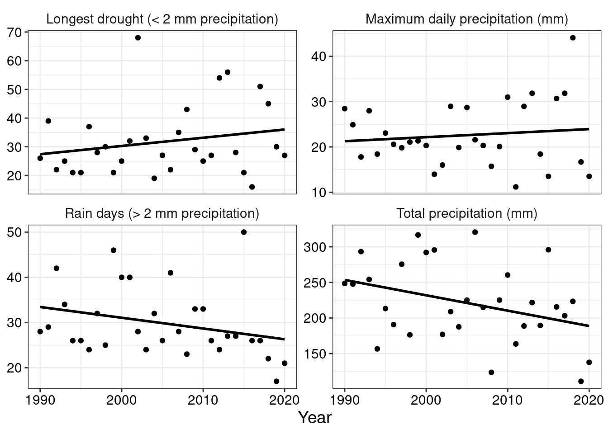
Summer precip trends 1909-present
All data from NOAA Crested Butte station.
#weird long run of high precipitation in Sept 1927
daily_NOAA %>% filter(id=="USC00051959", year(date)>1909, year(date)!=1927) %>%
mutate(julian = yday(date), decade = factor(floor(year(date)/10)*10), decade = recode(decade, "2020"="2010")) %>%
group_by(julian, decade) %>% summarize(prcp_mm = mean(prcp_mm, na.rm=T)) %>%
ggplot(aes(y=prcp_mm, x=julian, color=decade)) + geom_smooth(span=0.15, se=F)+
labs(x="Day of year", y="Mean Crested Butte precipiation (mm)", color="Decade", title="Snowmelt and monsoon timing by decade") +
scale_color_viridis_d(option="inferno") + coord_cartesian(xlim=c(120,270)) + theme_dark()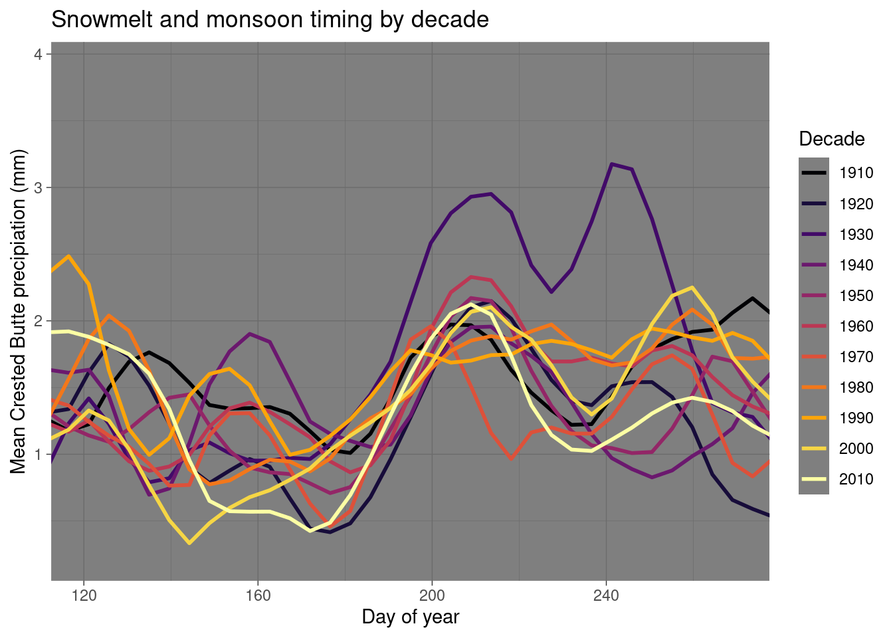
daily_NOAA %>% filter(id=="USC00051959", year(date)>1909, year(date)!=1927,yday(date)>=120, yday(date)<= 270, prcp_mm > 0) %>%
mutate(decade = factor(floor(year(date)/10)*10), decade = recode(decade, "2020"="2010")) %>% group_by(decade) %>%
ggplot(aes(x=prcp_mm, color=decade)) + geom_density() +
labs(x="Crested Butte precipiation (mm)", y="Proportion", color="Decade",
title="Intensity spectrum of rainstorms > 0 mm \n(day 120-270, Crested Butte)") +
scale_color_viridis_d(option="inferno") + coord_cartesian(xlim=c(0,40)) + theme_dark()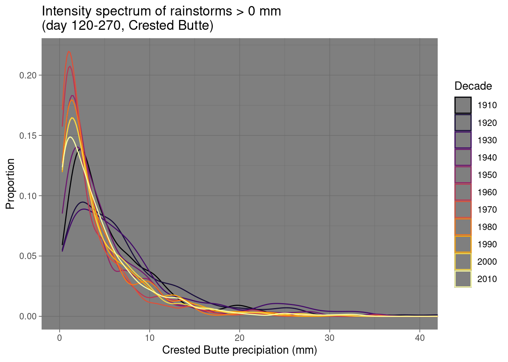
daily_NOAA %>% filter(id=="USC00051959", year(date)>1909, year(date)!=1927,prcp_mm > 2) %>%
mutate(drought_days = c(0,diff(date)), year=year(date)) %>% filter(yday(date)>=120, yday(date)<= 270,) %>%
select(year, date, drought_days) %>% group_by(year) %>% summarize(max_drought_days = max(drought_days)) %>%
ggplot(aes(x= year, y=max_drought_days)) + geom_smooth(span=0.5) +geom_point() +
labs(x="Year", y="Consecutive drought days with < 2 mm daily precipitation \n(day 120-270, Crested Butte)")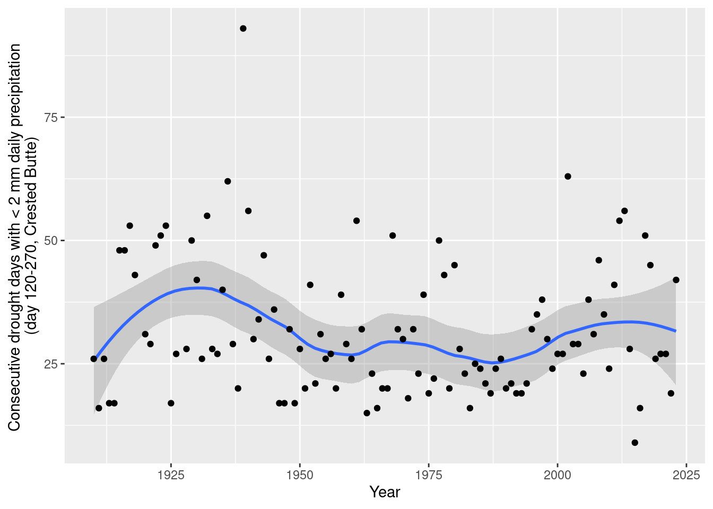
daily_NOAA %>% filter(id=="USC00051959", year(date)>1909, year(date)!=1927,yday(date)>=120, yday(date)<= 270, prcp_mm > 2) %>%
count(year=year(date)) %>%
ggplot(aes(x= year, y=n)) + geom_smooth(span=0.5) + geom_point() +
labs(x="Year", y="Days with > 2 mm daily precipitation (day 120-270, Crested Butte)")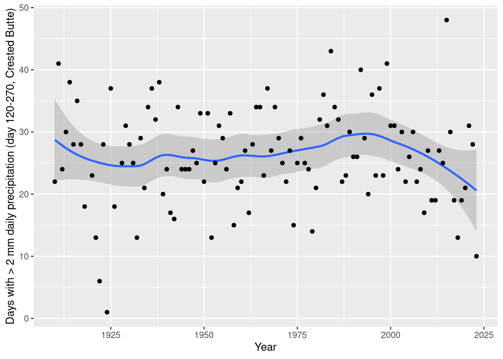
daily_NOAA %>% filter(id=="USC00051959", year(date)>1909, year(date)!=1927, yday(date)>=120, yday(date)<= 270) %>%
group_by(year=year(date)) %>% summarize(total_mm=sum(prcp_mm, na.rm=T)) %>%
ggplot(aes(x= year, y=total_mm)) + geom_smooth(span=0.5) + geom_point() +
labs(x="Year", y="Total precipitation (mm, day 120-270, Crested Butte)")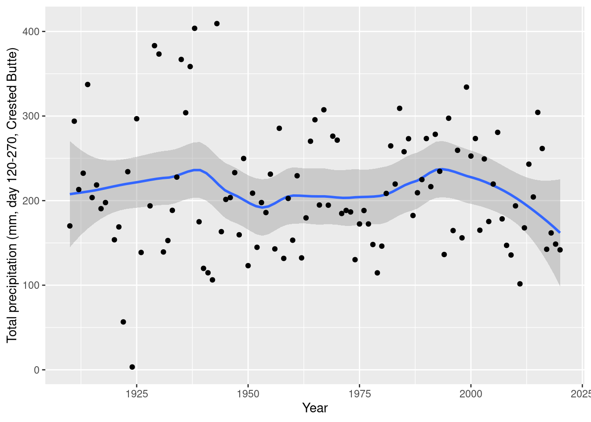
daily_NOAA %>% filter(id=="USC00051959", year(date)>1909, yday(date)>=120, yday(date)<= 270) %>%
group_by(year=year(date)) %>% summarize(tmax_mean=mean(tmax_C, na.rm=T)) %>%
ggplot(aes(x= year, y=tmax_mean)) + geom_smooth(span=0.3) + geom_point() +
labs(x="Year", y="Average maximum temperature (C, day 120-270, Crested Butte)")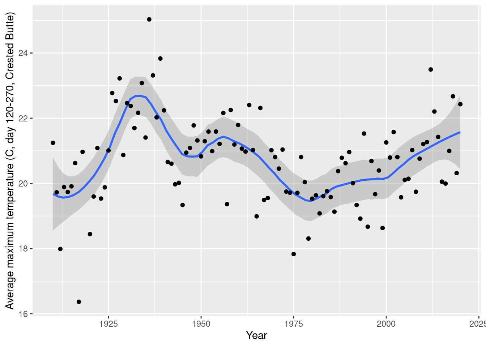
daily_NOAA %>% filter(id=="USC00051959", year(date)>1909, yday(date)>=120, yday(date)<= 270) %>%
group_by(year=year(date)) %>% summarize(tmin_mean=mean(tmin_C, na.rm=T)) %>%
ggplot(aes(x= year, y=tmin_mean)) + geom_smooth(span=0.3) + geom_point() +
labs(x="Year", y="Average minimum temperature (C, day 120-270, Crested Butte)")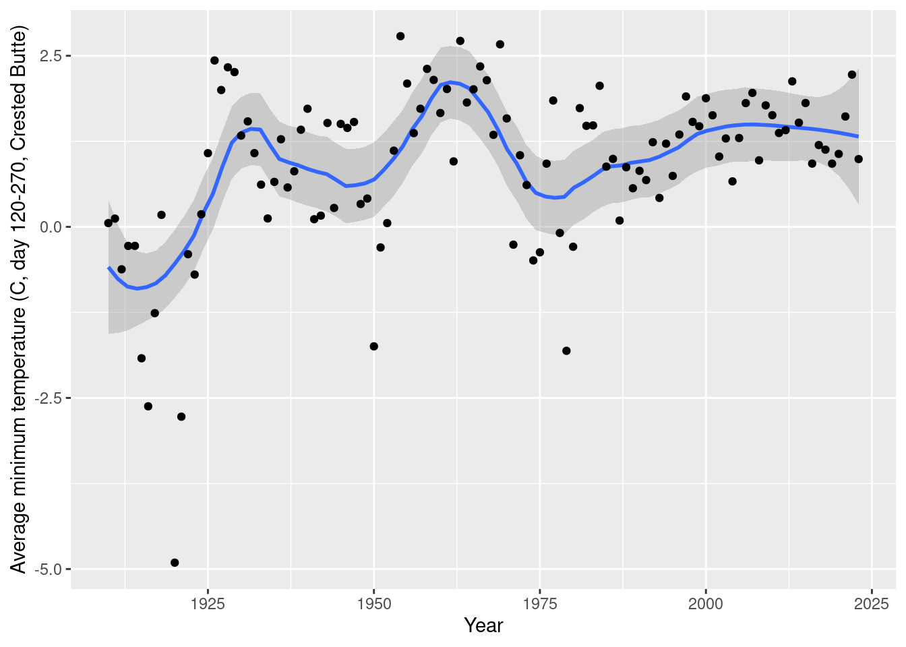
Snowmelt timing 1976-present
groundcover %>% mutate(first_snow_day=first_snow_day-365) %>%
pivot_longer(ends_with("day"), names_to="threshold", values_to="day") %>% drop_na(day) %>% select(-starts_with("first")) %>%
mutate(threshold = fct_reorder(factor(threshold),day, na.rm=T, .desc=T)) %>%
ggplot(aes(x=year, y=day, color=threshold)) +
geom_line(aes(group=year), size=2)+ geom_smooth( method="lm", se=F) +geom_point() +
scale_x_continuous(minor_breaks = 1976:2020, position = "top") + scale_y_continuous(n.breaks=10)+
scale_color_grey(labels=function(x) str_to_sentence(str_replace_all(x, "_", " ")), start=0, end=0.85) +
labs(x="Year", y="Day of year", color="Threshold") + theme_minimal()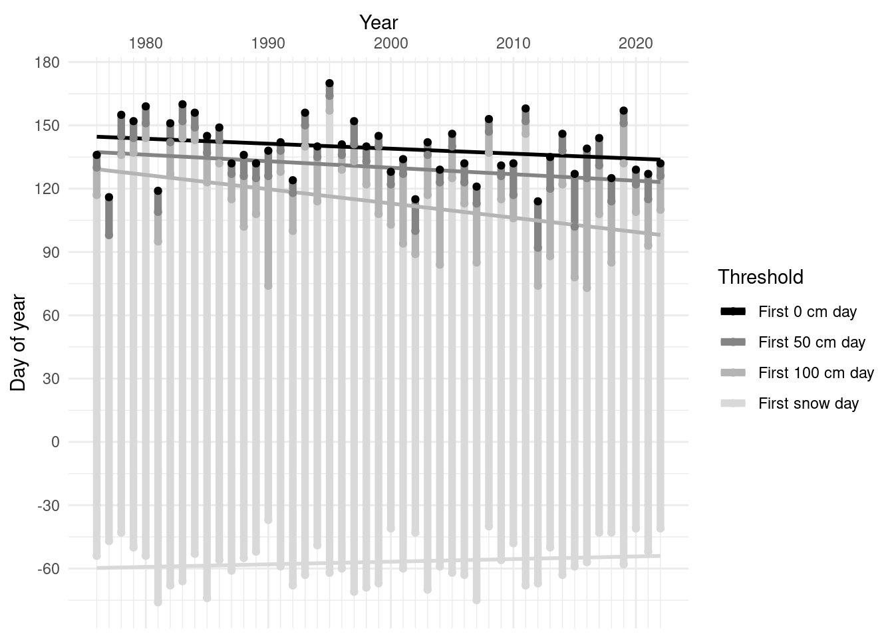